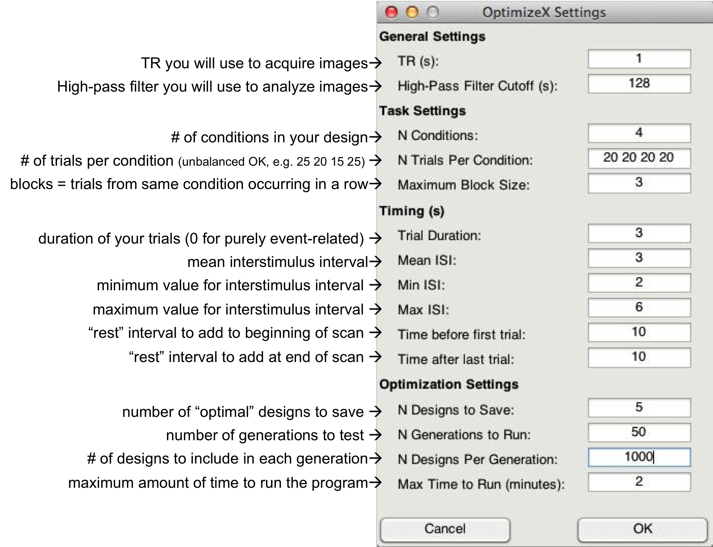
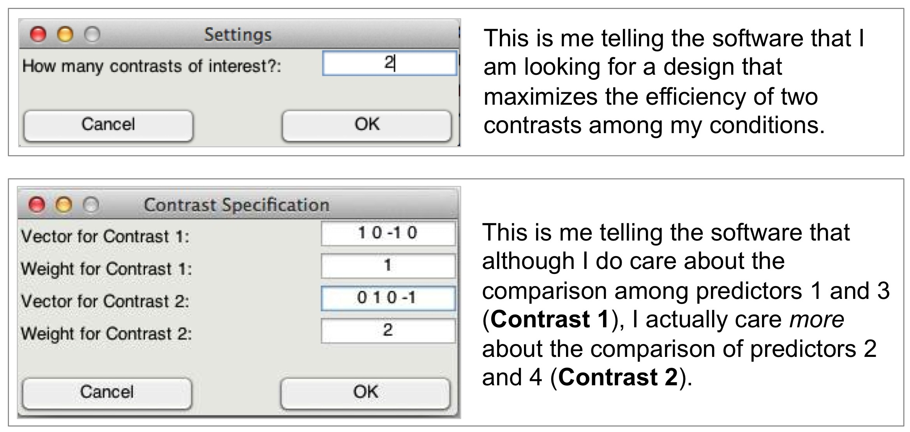
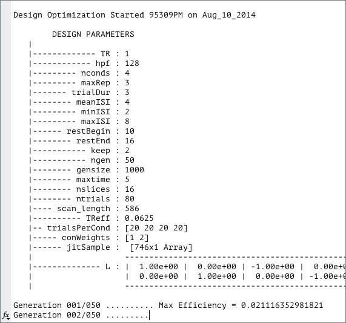
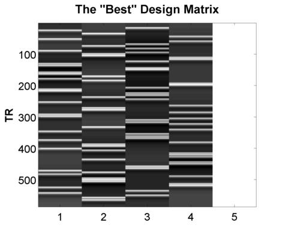
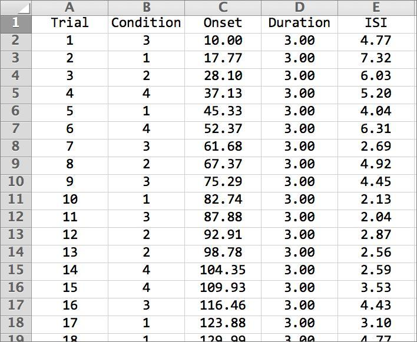

Numerical Optimization of Event-Related Designs
Here you'll learn to use a program called OptimizeXGUI.m to optimize a complex, randomized event-related design that contains multiple event types (i.e., conditions). This software is specifically designed for optimizing the detection of specific linear contrasts of interest (i.e., activation differences). Most importantly, it (hopefully) will be easy for you to use, leaving you with no excuse for not optimizing your design for your next event-related study. In addition, you should check out Tor Wager'sDesign Optimization software,which is more powerful than this software but requires more MATLAB experience and time to be able to use effectively.
To get started, go ahead and run the program in a MATLAB command window:
optimizeXGUI; % make sure you're in the right directory
You should now see the main input dialogue:
Feel free to create your own unique design by modifying the inputs. Or, you can just use the "default" values to proceed on to the next step, which is to tell the software which contrasts you care most about:
That's it! The software will do the rest of the work, some of which you can see in the MATLAB command window:
Once it finishes, you should see a figure pop up showing you the most efficient design matrix:
In addition, you should see a new folder in the directory in which you ran the program. Inside that directory are .csv files (and .txt files, which can be read a bit easier back into MATLAB) like this:
For most applications, this should be all of the information you need to implement your experiment, and to do so in a manner that is optimal given the contrasts you care about. Of course, you might want to think about running the software for more than a minute if you do decide to use this for a study! There is no hard-and-fast rule for how long you do need to run it, but it wouldn't hurt (presumably) to run it overnight.